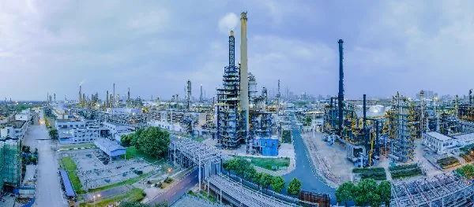

9月河南规模以上工业增加值同比增长3%
首页 / 9月河南规模以上工业增加值同比增长3%日前，河南省统计局发布数据解读显示，9月份，河南省规模以上工业增加值同比增长3.0%（以下增加值增速均为扣除价格因素的增长率），较8月提高1.5个百分点。1-9月份，河南省规模以上工业增加值同比增长7.9%，较1-8月回落0.7个百分点。
分三大门类看，9月份，河南省采矿业增加值同比下降10.3%，制造业同比增长4.6%，电力、热力、燃气及水生产和供应业同比下降2.7%。
分经济类型看，9月份，河南省国有控股企业增加值同比下降1.6%，集体企业同比下降1.5%，股份制企业同比增长1.1%，外商及港澳台商投资企业同比增长20.4%。
分行业看，9月份，河南省40个大类行业中有24个行业增加值同比增长。其中，煤炭开采和洗选业同比下降11.0%，农副食品加工业同比增长10.1%，纺织业下降5.2%，化学原料和化学制品制造业下降0.7%，非金属矿物制品业下降4.1%，黑色金属冶炼和压延加工业同比下降10.6%，有色金属冶炼和压延加工业同比增长3.2%，通用设备制造业下降6.0%，专用设备制造业增长13.6%，汽车制造业下降6.9%，铁路、船舶、航空航天和其他运输设备制造业增长14.0%，电气机械和器材制造业增长6.7%，计算机、通信和其他电子设备制造业增长24.1%，电力、热力生产和供应业下降5.4%。
分产品看，9月份，河南省596种重点监测产品中，我省生产476种，其中有248种产品产量同比增长。钢材342.18万吨，同比下降8.5%；水泥854.95万吨，同比下降26.5%；十种有色金属34.69万吨，同比下降3.7%；汽车4.56万辆，同比增长2.7%；轿车2.43万辆，同比增长14.4%；运动型多用途乘用车（SUV）0.67万辆，同比下降46.1%；移动通信手持机（手机）1685.35万台，同比下降16.0%。
9月份，河南省工业企业产品销售率为96.6%，比上年同期提高3.4个百分点；工业企业实现出口交货值551.96亿元，同比增长126.5%。
